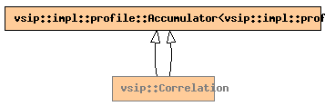

Global Namespace
Inheritance Tree
Inheritance Graph
Name Index
template <
template <typename , typename > class
ConstViewT,
support_region_type
Supp
,
typename
T, unsigned int
N_times
=
0
,
alg_hint_type
A_hint
=
alg_time
>
class
vsip
::Correlation
File:
../../../vsip/core/signal/corr.hpp

-
Public Member function templates
template <
typename
Block0,
typename
Block1,
typename
Block2>
Vector
<T, Block2>
operator()
(
bias_type
bias
,
const_Vector
<T, Block0>
ref
,
const_Vector
<T, Block1>
in
,
Vector
<T, Block2>
out
)
template <
typename
Block0,
typename
Block1,
typename
Block2>
Matrix
<T, Block2>
operator()
(
bias_type
bias
,
const_Matrix
<T, Block0>
ref
,
const_Matrix
<T, Block1>
in
,
Matrix
<T, Block2>
out
)
-
Public Member functions
constructor
Correlation
(const
Domain
<
dim
>&
ref_size
, const
Domain
<
dim
>&
input_size
)
constructor
Correlation
(const
Correlation
&
corr
)
Correlation
&
operator=
(const
Correlation
&)
destructor
~Correlation
()
support_region_type
support
()
const
float
impl_performance
(char*
what
)
const
-
Private Typedefs
impl::profile::Accumulator
<
impl::profile::signal
>
accumulator_type
vsip_csl::dispatcher::Dispatcher::type
base_type
-
Private Typenames
typename
vsip_csl :: dispatcher :: Dispatcher < vsip_csl :: dispatcher :: op :: corr < dim , Supp , T , N_times , A_hint > > :: type
-
Private Data members
const
dimension_type
dim
= impl :: Dim_of_view < ConstViewT > :: dim
Generated on Sat Apr 17 11:13:04 2010 by
synopsis
(version 0.12)


 synopsis (version 0.12)
synopsis (version 0.12)